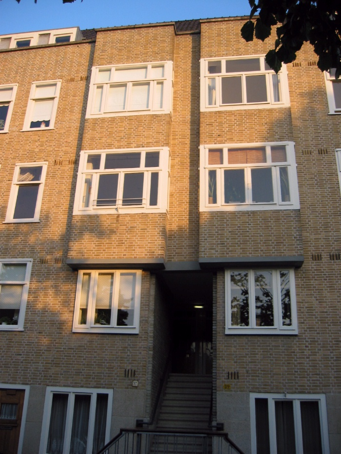
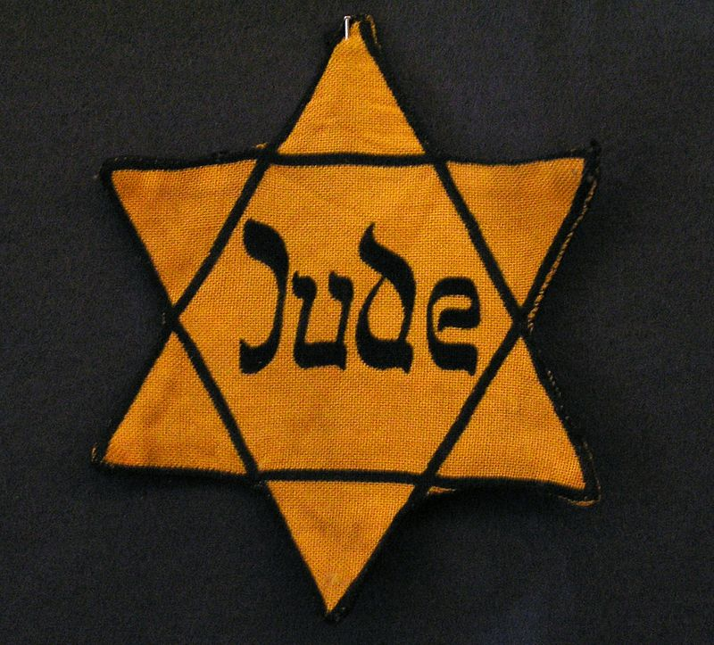
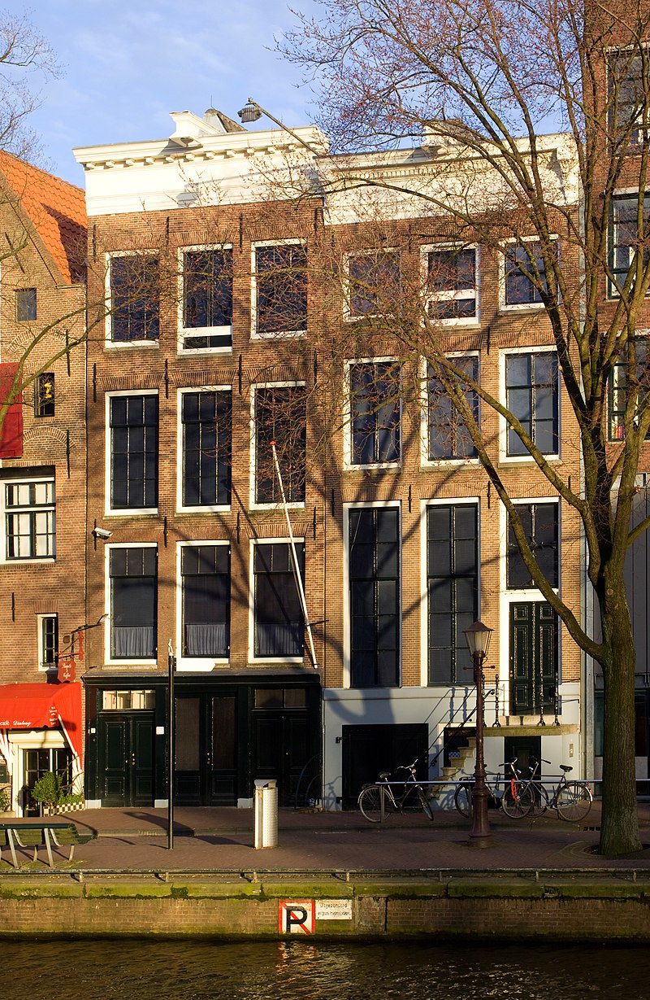
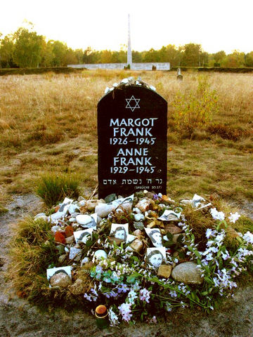
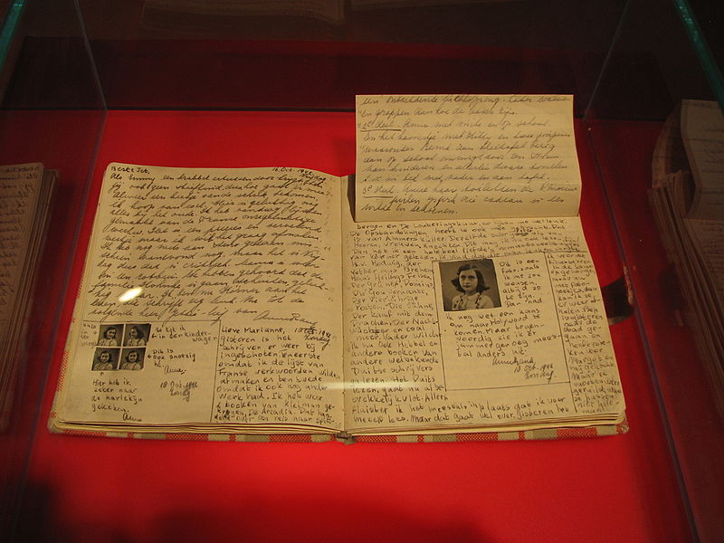
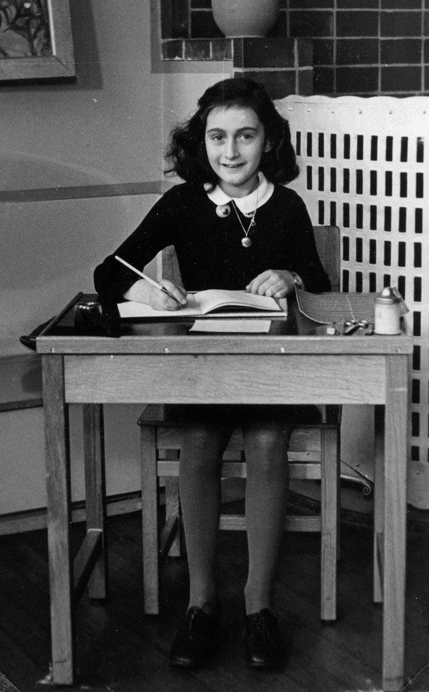
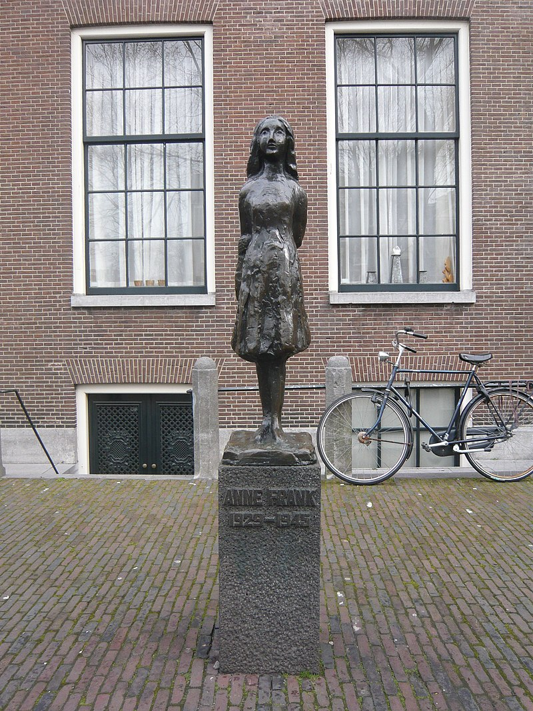
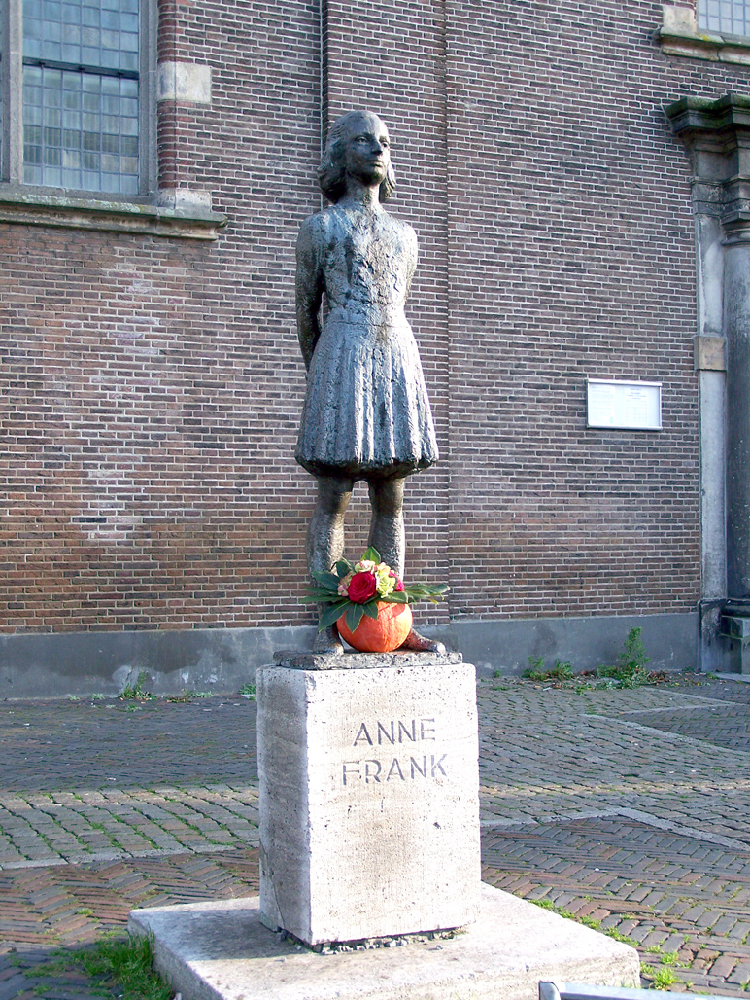
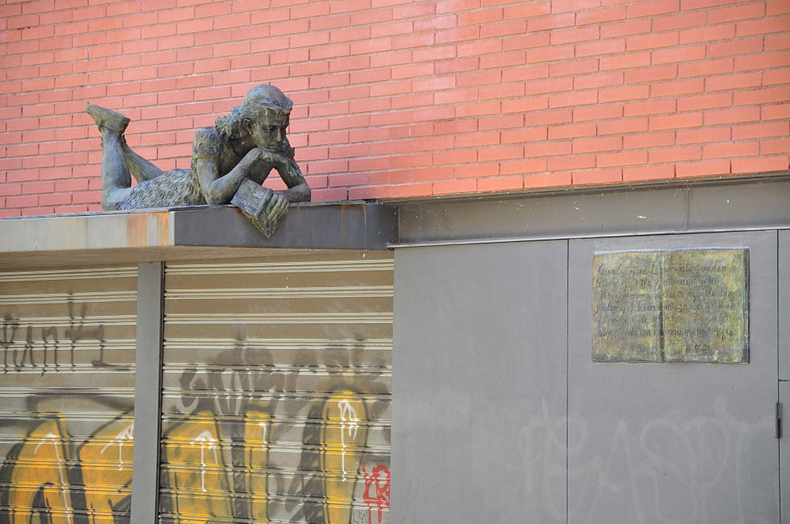

En 1934 la madre de Anne se trasladó con sus dos hijas a Ámsterdam, donde su marido Otto
llevaba ya varios meses preparando sus negocios y la futura vida de su familia. Se fueron
a vivir a un barrio nuevo al sur de la ciudad, Rivierenbuurt, donde ya se habían instalado
numerosas familias judías procedentes de Alemania, que se sentían más seguras en los Países
Bajos que en lo que era en realidad su patria.
En el exilio, los padres continuaron preocupándose por la formación de sus hijas. Margot iba
a una escuela pública y Anne a una Montessori, también pública. Margot tenía estupendos
resultados en matemáticas, y a Anne se le daba bien la lectura y la escritura. Una de sus
mejores amigas, Hannah Goslar, a quien llamaban Hanneli, contó posteriormente que Anne a
menudo escribía en secreto y no quería decir nada del contenido. Sus recuerdos dieron lugar
a un libro de Alison Leslie Gold, publicado en 1998.6 Otra amiga, Jacqueline van Maarsen,
también relató algunos años después sus vivencias con Anne.7 En el verano de 1935 y 1936
Anne pasó unas vacaciones despreocupadas con su tía abuela en Suiza, y también hizo amistades
allí.
A partir de 1933, Otto Frank estuvo a cargo de la sucursal holandesa de la empresa alemana
Opekta. En 1938 fundó junto con su amigo Hermann van Pels, un carnicero que también había
huido con su familia judía, otra empresa dedicada a la venta de especias. Otto hacía grandes
esfuerzos por asegurarse unos ingresos, pues fue testigo de cómo el banco de su padre, que
ya había salido debilitado de la crisis económica mundial de 1929, fue expropiado por los
nacionalsocialistas.
En 1939 la abuela de Ana (madre de su madre Edith) se mudó a Ámsterdam con los Frank y se
quedó con ellos hasta que falleció en 1942. Su familia se enteró, de primera mano, de la
manera tan despiadada en que actuaban los nacionalsocialistas por el hermano de Edith, Walter
Holländer, a quien detuvieron en la "noche de los cristales rotos" y llevaron al campo de
concentración Sachsenhausen, antes de permitirle viajar a los Países Bajos con una autorización
especial. Sin embargo, Otto Frank mantenía su optimismo, incluso tras enterarse de las
sinagogas incendiadas. Calificó este suceso como un ataque de fiebre que haría entrar
en razón a todos los participantes. Pero su esperanza se trocó en miedo cuando, en septiembre
de 1939, el ataque a Polonia hizo estallar la Segunda Guerra Mundial.
A los judíos exiliados les preocupaba la amenaza que el ansia de expansión de Hitler podía suponer
para los Países Bajos, los cuales intentaban mantenerse neutrales. El 10 de mayo de 1940, la
Wehrmacht alemana atacó y ocupó el país. Las tropas neerlandesas se rindieron y la Reina
Guillermina huyó a Londres, donde se exilió. Enseguida quedó patente que a los judíos residentes
en Holanda les esperaba el mismo destino que a los de los otros territorios ocupados. Otto y
Edith Frank vieron que ya no podían ocultarles a sus hijas la situación política. Hasta entonces,
los padres habían intentado mantenerlas al margen y simular una cierta normalidad, pero ahora
Ana estaba hecha un lío. Su carácter combativo la solía llevar a no plegarse; estaba acostumbrada
a imponer sus puntos de vista. Otto intentó varias veces que le concedieran asilo en Estados
Unidos o en Cuba, entre otros con la ayuda de su amigo Nathan Straus, quien tenía contactos
con la primera dama Eleanor Roosevelt, pero no tuvo éxito.8
Cada vez había más leyes "anti-judíos"; les quitaban sus derechos, se les excluía de la vida social
y de todas las instituciones públicas. Para Ana, que coleccionaba con entusiasmo fotos de las estrellas
de Hollywood, fue especialmente duro que le prohibieran ir al cine. Tuvo que ir a una escuela especial,
el Liceo, lo cual supuso separarse de muchos amigos. Todos los judíos estaban obligados a acudir a
que los registraran; a ellos y después incluso a sus bicicletas. Cuando se les hizo llevar la cruz
judía, muchos neerlandeses se solidarizaron con ellos. Pero por otra parte se constituyó un partido
nacionalsocialista neerlandés. Para proteger a su empresa de las estrictas inspecciones a las que se
las sometía, Otto Frank le cedió la dirección, sobre el papel, a dos colaboradores suyos que eran
arios.
Al cumplir trece años, el 12 de junio de 1942, Ana recibió de regalo un pequeño diario, un cuaderno
a cuadros rojos y blancos que ella le había señalado a su padre en un escaparate unos días antes.
Ese mismo día, Ana comenzó a hacer anotaciones en lengua neerlandesa, describiéndose a sí misma y
a su familia, así como su vida diaria en casa y en el colegio.
El escondite en la casa trasera
Otto Frank había preparado un escondite en la parte trasera de la empresa, en el número 263 de Prinsengracht, como le había sugerido uno de sus colaboradores. El edificio principal cerca de la iglesia Westerkerk no llamaba la atención; era viejo y típico de ese barrio de Ámsterdam. La casa de atrás era una construcción de tres plantas unida a la fachada posterior del edificio principal. En el primer piso había dos habitaciones pequeñas con baño y WC, por encima una habitación grande y otra pequeña, y en esta última había una escalera de mano que llevaba a la buhardilla. En total eran unos 50 metros cuadrados. Delante de las oficinas había un pasillo, en el cual, oculta tras una estantería de libros, una puerta se abría hacia una escalera empinada que llevaba a la casa trasera.
Otto Frank le había pedido ayuda, anteriormente, a su secretaria Miep Gies (de soltera, Hermine Santrouschitz). Si bien ella tenía que contar con ser castigada en caso de que fueran descubiertos los judíos escondidos, accedió y asumió una difícil responsabilidad. Junto con su marido Jan Gies, los colaboradores de Otto, Kugler y Kleiman, así como Bep Voskuijl, ayudó a los habitantes de la casa trasera.
La situación de la familia Frank se tornó aguda cuando el 5 de julio de 1942 Margot Frank recibió una llamada de la "unidad central para emigración judía en Ámsterdam", que ordenaba su deportación a un campo de trabajo. Si Margot no hubiese acudido, habrían detenido a toda la familia. A raíz de la llamada, Otto Frank decidió trasladarse antes de lo previsto al escondite con su familia. Como los judíos no podían utilizar los transportes públicos, tuvieron que caminar varios kilómetros desde su casa hasta el refugio, portando cada uno todas las vestimentas que podía, dado que no debían correr el riesgo de ser vistos con equipajes. Al día siguiente, el 6 de julio, empezó para toda la familia una vida oculta, ya que parecía imposible huir de los Países Bajos, ahora ocupados. Helmut Silberberg, amigo de Ana, fue a visitarlos a su casa y se encontró con que ya no estaban. Para disimular, la familia había dejado desordenada su vivienda anterior, y habían abandonado un papel del que se podía deducir una huida repentina a Suiza. Una semana más tarde, la familia van Pels entró también en la casa trasera, como hizo después en noviembre de 1942 el dentista Fritz Pfeffer. Inicialmente, tenían la esperanza de recobrar la libertad al cabo de unas pocas semanas, pero pasaron más de dos años escondidos allí. Durante todo este tiempo no pudieron salir a la calle, y tenían que tener cuidado de no hacer ruidos que se pudieran oír desde fuera. El ambiente era tenso, y los refugiados vivían con miedo e incertidumbre, lo cual daba lugar a continuas tensiones. Los conflictos personales se hacían cada vez más visibles. A Ana le molestaba tener que compartir la habitación con Fritz Pfeffer, y ver su privacidad limitada. Ella a menudo discutía con su madre, cada vez más desesperada, lo cual chocaba con la manera de ser de la hija, y Otto intentaba que recuperaran la calma. Para Ana fue especialmente difícil pasar su adolescencia, época caracterizada por una actitud rebelde, encerrada con sus padres y obligada a adaptarse a ellos.
Miep Gies no solo traía alimentos, sino también noticias de la guerra. A medio día, los ayudantes comían junto con los refugiados, y al final de la tarde, cuando los otros empleados de la empresa habían abandonado el edificio, Ana y los demás podían acudir a la casa principal, donde escuchaban la BBC. Las noticias eran preocupantes: el 17 de julio de 1942 salió el primer tren con destino al campo de concentración de Auschwitz, y se privó a los judíos de la nacionalidad.
Ana leyó muchos libros durante este tiempo, que le sirvieron para mejorar su estilo y convertirse en una escritora autónoma. Su habilidad para la escritura fue aumentando, al igual que su confianza en sí misma como autora. Ella tenía sus dudas sobre si Otto realmente amaba a Edith; sospechaba que se había casado con ella por mera conveniencia. Ana, por su parte, comenzó a interesarse por Peter van Pels, un chico al que inicialmente había descrito como tímido y aburrido. Pero la relación terminó tras un episodio de pasión. Del diario también se desprende que Ana estaba al tanto de las deportaciones y del dinero que ofrecían de recompensa por delatar a judíos.
En el escondite había ocho personas: sus padres, Otto y Edith Frank; ella y su hermana mayor Margot; Fritz Pfeffer, un dentista judío (al que Ana dio el nombre de Albert Dussel en su Diario), y la familia van Pels (identificada como van Daan en el Diario), formada por Hermann y Auguste van Pels, y el hijo de ambos, Peter. Durante aquellos años, Ana escribió su Diario, en el que quedaba constancia de su miedo a vivir escondida durante años, sus nacientes sentimientos hacia Peter, los conflictos con sus padres y su vocación de escritora. Pocos meses antes de ser descubiertos, empezó a reescribir su Diario con la idea de publicarlo tras la guerra.
Ana, su familia y los acompañantes fueron arrestados por la Grüne Polizei ("policía verde") el 4 de agosto de 1944 y un mes después, el 2 de septiembre, toda la familia fue trasladada en tren de Westerbork (campo de concentración en el noreste de los Países Bajos) hacia Auschwitz, viaje que les llevó tres días. Mientras tanto, Miep Gies y Bep Voskuijl, dos de las personas que los habían protegido mientras estuvieron escondidos, encontraron y guardaron el Diario y otros papeles de Ana.
Desde su captura, se creyó que la familia fue delatada por un colaborador de la Gestapo, mientras que otras investigaciones afirmaban que el descubrimiento de los ocupantes fue casual, ya que los agentes de las SS estaban investigando delitos de empleo ilegal en el edificio y que la persecución de judíos no era su objetivo.9 En 2022 un equipo de investigadores internacionales, entre ellos el agente jubilado del FBI Vince Pankoke, llegó a la conclusión de que es muy probable que el notario judío Arnold van den Bergh fuese quien delatara el escondite de la familia Frank, en lo que habría sido un trato con los nazis a cambio de garantizar la seguridad de su propia familia, 10 11 si bien algunos historiadores han puesto en duda esta teoría.12
Ana, Margot y Edith Frank, la familia van Pels y Fritz Pfeffer no sobrevivieron a los campos de concentración nazis (aunque Peter van Pels murió durante las marchas entre campos). Margot y Ana pasaron un mes en Auschwitz II-Birkenau y luego fueron enviadas a Bergen-Belsen, donde murieron de tifus en marzo de 1945, poco antes de la liberación. Solo Otto logró salir del Holocausto con vida.4 Miep le dio el diario, que él editaría con el fin de publicarlo con el título Diario de Ana Frank, y que finalmente ha sido publicado en más de 70 idiomas.
El Memorial en honor a Ana y Margot Frank está ubicado en el lugar donde se hallaba la fosa común correspondiente a la barraca donde murieron, en el campo de concentración de Bergen-Belsen.

Entrada al escondite, detrás de una biblioteca

El bloque de apartamentos en la Merwedeplein donde la familia Frank vivió desde 1934 hasta 1942.

Estrella de David del tipo que todo judío estaba obligado a portar durante la ocupación nazi.

Fachada principal del edificio Opekta (izquierda), en la Prinsengracht. Las oficinas de Otto Frank se encontraban al frente del edificio y la achterhuis se encontraba detrás.
Víctor Kugler (en ediciones antiguas nombrado como Kraler), Johannes Kleiman (Koophuis), Miep Gies y Elisabeth ''Bep'' Voskuijl eran los únicos empleados que sabían del escondite y, junto con Jan, el esposo de Gies, y Johannes Hendrik Voskuijl, el padre de Bep Voskuijl, eran quienes ayudaban a los Frank a sobrevivir durante su confinamiento. Ellos eran el único contacto entre el exterior y los ocupantes de la casa, y los mantenían informados de las noticias de la guerra y de los eventos políticos. Eran también los proveedores de todo lo necesario para la seguridad y supervivencia de la familia; el abastecimiento de comida resultaba cada vez más difícil a medida que el tiempo transcurría. Ana escribió sobre la dedicación y sobre los esfuerzos para levantarles el ánimo durante los momentos más peligrosos. Todos eran conscientes de que dar refugio a judíos se penaba en aquel momento con la muerte.
A finales de julio, se les unió la familia Van Pels (Van Daan): Hermann, Auguste y Peter de 16 años, y más tarde, en noviembre, llegó Fritz Pfeffer (Albert Dussel), dentista y amigo de la familia. Ana escribió sobre lo bueno que era tener otras personas con quienes hablar, pero las tensiones rápidamente se presentaron en este grupo de personas que debían convivir confinados en este escondite. Luego de compartir su habitación con Pfeffer, Ana terminó por considerarlo insoportable, y se peleó con Auguste van Pels, a quien consideraba fuera de sus cabales. Su relación con su madre se hizo difícil también y Ana escribió que sentía tener poco en común con ella por ser su madre demasiado abstraída. Algunas veces discutió con Margot, y escribió sobre un lazo inesperado que se había desarrollado entre ellas, aunque a quien se sentía más cercana era a su padre. Tiempo más tarde, también comenzó a apreciar la gentileza de Peter van Pels, y hasta llegaron a tener sentimientos románticos.
Ana pasaba la mayor parte de su tiempo leyendo y estudiando, al tiempo que continuaba escribiendo en su diario. Además de narrar los hechos transcurridos, Ana escribía sobre sus sentimientos, creencias y ambiciones, temas de los que no hablaba con los demás. Al sentirse más segura sobre su forma de escribir, al mismo tiempo que crecía y maduraba, trataba temas más abstractos, como sus creencias en Dios, o sobre cómo definía ella la naturaleza humana. Escribió regularmente hasta su anotación final, el 1 de agosto de 1944.
Arresto y muerte
La mañana del 4 de agosto de 1944 la Grüne Polizei ("Policía del Orden", fuerza policial uniformada cuyas funciones ejecutivas recaían en la dirección de las SS) asaltó la achterhuis. Conducido por el sargento del Cuerpo de Protección (SS) Karl Silberbauer, de la Sección IVB4 del Servicio de Seguridad (SD), el grupo contaba al menos con tres agentes de la Policía de Seguridad. Los inquilinos fueron introducidos en camiones y trasladados para someterlos a interrogatorio. Victor Kugler y Johannes Kleiman fueron encarcelados, pero a Miep Gies y Bep Voskuijl les permitieron marcharse. Más tarde regresarían a la achterhuis, donde encontraron las anotaciones de Ana desparramadas por el suelo. Las recogieron, así como varios álbumes de fotos de la familia, y Gies se propuso devolvérselos a Ana cuando la guerra hubiese terminado. En 2022 un equipo de investigadores internacionales, entre ellos el agente jubilado del FBI Vince Pankoke, concluyeron que el notario judío Arnold van den Bergh fue quien delató el escondite de la familia Frank, en lo que habría sido un trato con los nazis a cambio de garantizar la seguridad de su propia familia.10 11
Llevaron a los detenidos de la casa a un campo en Westerbork, aparentemente un campo de tránsito por el que hasta ese momento habían pasado más de 100 000 judíos. Una vez allí, los ocho escondidos fueron calificados como "criminales" por no acatar la orden de presentarse voluntariamente a trabajos forzados, y haberse escondido. Fueron llevados a los "Barracones S", una zona del campo que estaba separada del resto por una gran cerca de púas. Se les prohibió el uso de sus propias ropas, y se les dio un uniforme azul con parches rojos y de calzado unos zuecos. Aunque los hombres y mujeres estaban en barracas distintas, podían verse durante la tarde y la noche.
El 2 de septiembre, el grupo fue deportado, en el que sería su último traslado, desde Westerbork hasta el campo de concentración de Auschwitz. Tras tres días de viaje llegaron a su destino, y los hombres y mujeres fueron separados según su sexo, para no volverse a ver más. De los 1019 recién llegados, 549 –incluyendo niños menores de 15 años– fueron seleccionados y enviados directamente a las cámaras de gas, en las que fueron asesinados. Ana había cumplido 15 años tres meses antes y se libró, y aunque todos los de la achterhuis sobrevivieron a la selección, Ana creyó que su padre había sido asesinado.
Junto con las otras mujeres no seleccionadas para la muerte inmediata, Ana fue obligada a permanecer desnuda para desinfectarla, le raparon la cabeza y le tatuaron un número de identificación en el brazo. Durante el día empleaban a las mujeres en realizar trabajos forzados y por la noche las hacinaban en barracones frigoríficos. Las enfermedades se propagaban velozmente y en poco tiempo Ana terminó con la piel cubierta de costras.
El 28 de octubre comenzó la selección para reubicar a las mujeres en Bergen-Belsen. Más de 8000 mujeres, entre ellas Ana Frank, Margot Frank y Auguste van Pels, fueron trasladadas, pero Edith Frank se quedó atrás. Se levantaron tiendas para acoger a los prisioneros, entre ellos Ana y Margot. Con el aumento de la población, se incrementó rápidamente la tasa de mortalidad debido a enfermedades. Ana pudo juntarse por un breve periodo con dos amigas, Hanneli Goslar (llamada «Lies» en el diario) y Nanette Blitz, quienes sobrevivieron a la guerra. Contaron cómo Ana, desnuda salvo por un trozo de manta, les explicó que, infestada de piojos, se había despojado de sus ropas. La describieron como calva, demacrada y temblorosa, pero, a pesar de su enfermedad, les dijo que estaba más preocupada por Margot, cuyo estado parecía más grave. Goslar y Blitz no llegaron a ver a Margot, que permaneció en su litera, demasiado débil. Asimismo, Ana les dijo que estaban solas, y que sus padres habían muerto.

Lápida de Ana y Margot Frank, en Bergen-Belsen.
En febrero de 1945, una epidemia de tifus se propagó por todo el campo; se estima que terminó con la vida de 17 000 prisioneros. Los testigos contaron más tarde que Margot, debilitada como estaba, se cayó de su litera y murió como consecuencia del golpe, y que pocos días después Ana también murió, alrededor de mediados de febrero. Unos dos meses después el campo sería liberado por tropas británicas, el 15 de abril de 1945.
Tras la guerra, de los aproximadamente 110 000 judíos que fueron deportados desde los Países Bajos durante la ocupación nazi, solo 5000 habían sobrevivido. De los ocho inquilinos de la achterhuis, solo el padre de Ana salió con vida. Herman van Pels fue gaseado justo tras la llegada del grupo a Auschwitz-Birkenau el 6 de septiembre de 1944. Su esposa Auguste murió entre el 9 de abril y el 8 de mayo de 1945 en Alemania o en Checoslovaquia. Su hijo Peter falleció el 5 de mayo de 1945 en el campo de concentración de Mauthausen, Austria, después de ser trasladado andando desde Auschwitz.
El Dr. Friedrich Pfeffer (o Sr. Dussel) murió el 20 de diciembre de 1944 en el campo de concentración de Neuengamme. La madre de Ana, Edith Hollander, falleció el 6 de enero de 1945 en Birkenau. Johannes Kleiman y Victor Kugler, socios comerciales de Otto Frank que habían ayudado a los anteriores mientras permanecieron escondidos, fueron arrestados por ayudar a la familia Frank. Ambos fueron sentenciados a realizar un Arbeitseinsatz (servicio de trabajo) en Alemania, y sobrevivieron a la guerra.
El diario de Ana Frank
Publicación del diario

Las páginas 92 y 93 del diario original.
Otto Frank sobrevivió y regresó a Ámsterdam. Fue informado del fallecimiento de su esposa y del traslado de sus hijas a Bergen-Belsen, quedando con la esperanza de que lograran sobrevivir. En julio de 1945, la Cruz Roja confirmó las muertes de Ana y Margot, y fue solo entonces cuando Miep Gies le dio el Diario. Tras leerlo, Otto comentó no haberse dado cuenta de cómo Ana había mantenido un registro tan exacto y bien escrito de su estadía juntos. Tratando de cumplir póstumamente el deseo de Ana expresado en el Diario de convertirse en escritora, decidió intentar publicarlo. Al preguntársela muchos años después sobre su primera reacción, respondió sencillamente: «Nunca supe que mi pequeña Ana era tan profunda».
El Diario de Ana se inicia como una expresión privada de sus pensamientos íntimos, expresando la intención de nunca permitir que otros lo leyeran. Describe cándidamente su vida, su familia y compañeros y su situación, mientras empieza a reconocer su ambición de escribir novelas y publicarlas. En el verano de 1944, escuchó una transmisión de radio de Gerrit Bolkestein —miembro del gobierno neerlandés en el exilio— que decía que al terminar la guerra crearía un registro público de la opresión sufrida por la población de su país bajo la ocupación alemana. Mencionó la publicación de cartas y diarios, de manera que Ana decidió que contribuiría con su Diario. Comenzó a corregir su escritura, a eliminar secciones y a reescribir otras, en vistas a una posible publicación. A su cuaderno original, anexó varios cuadernos adicionales y hojas sueltas. Creó pseudónimos para los miembros del grupo y sus benefactores. La familia van Pels se convirtió en Hermann, Petronella y Peter van Daan; Fritz Pfeffer pasó a llamarse Albert Dussel. Otto Frank utilizó la versión original del Diario, conocida como «versión A», y la versión corregida, conocida como «versión B», para producir la primera versión para ser publicada. Retiró algunos pasajes, sobre todo aquellos en los que se refería a su esposa en términos poco halagadores, así como secciones en las que hablaba de detalles íntimos respecto a su floreciente sexualidad. Restauró las verdaderas identidades de su familia, pero retuvo los pseudónimos de las otras personas.
Frank llevó el diario a la historiadora Anne Romein, quien intentó publicarlo, sin éxito. Luego se lo pasó a su esposo Jan Romein, quien escribió un artículo sobre el libro con el título de «Kinderstem» («La voz de una niña») en el periódico Het Parool el 3 de abril de 1946. Escribió que el diario «pausadamente expresado en la voz de una niña, muestra todos los odios del fascismo, mejor que todas las evidencias de los juicios de Núremberg juntas».13 Su artículo atrajo la atención de los editores y el Diario fue publicado en los Países Bajos en 1947 por el editor Contact, de Ámsterdam, bajo el título Het Achterhuis (La casa de atrás). Fue reimpreso en 1950. En abril de 1955 apareció la primera traducción del diario en español bajo el título Las habitaciones de atrás (traducción de Mª Isabel Iglesias, editorial Garbo, Barcelona).
Albert Hackett escribió una pieza de teatro basada en el Diario, estrenada en Nueva York en 1955, que recibió el Premio Pulitzer de Teatro. La pieza fue llevada al cine en 1959 con el título El diario de Ana Frank. Fue protagonizada por la actriz Millie Perkins, y Shelley Winters, que caracterizó a la señora Van Pels, consiguiendo el Óscar a Mejor Actriz Secundaria, que entregó a la Casa de Ana Frank. La película obtuvo una buena acogida y se hizo acreedora de otros dos premios Óscar. Sin embargo, no se convirtió en un gran éxito de taquilla, aunque despertó tal atención que aumentó el interés mundial por el libro. El Diario fue creciendo en popularidad con el pasar de los años, y hoy es lectura obligatoria en bachillerato de varios países y en varios estados de los Estados Unidos. En febrero de 2008 se estrenó14 en Madrid el musical El Diario de Ana Frank - Un Canto a la Vida, siendo la primera vez que la Fundación Ana Frank cedía los derechos a una empresa para representar un musical sobre Ana Frank y su obra en todo el mundo.
En 1986, se publicó una edición crítica del Diario.15 Esta edición compara secciones originales con secciones modificadas por el padre, e incluye una discusión relativa a su autenticidad así como datos históricos sobre su familia.
En 1988, Cornelis Suijk —antiguo director de la Fundación Ana Frank y presidente de la Fundación para la educación sobre el Holocausto de los Estados Unidos— anunció que había obtenido cinco páginas que habían sido eliminadas por Otto Frank del Diario antes de su publicación. Suijk afirma que Otto Frank le entregó esas páginas poco antes de su muerte en 1980. Las páginas eliminadas contienen comentarios muy críticos de Ana Frank hacia la relación matrimonial de sus padres y hacia su madre.16 La decisión de Suijk de reclamar derechos de autor sobre las cinco páginas para con ello financiar su fundación en los Estados Unidos causó controversia. El Instituto Neerlandés de Documentación de Guerra, actual propietario del manuscrito, solicitó que le fueran entregadas las páginas faltantes. En 2000 el Ministerio Neerlandés de Educación, Cultura y Ciencia accedió a donar 300 000 dólares a la fundación de Suijk y las páginas fueron entregadas en 2001.17 Desde entonces, han sido incluidas en las nuevas ediciones del Diario.
En 2004, se publicó un nuevo libro en los Países Bajos, titulado Mooie zinnen-boek (Libro de frases bonitas), que contenía fragmentos de libros y poemas cortos que Ana recopiló, por consejo de su padre, durante su permanencia en la achterhuis.
Elogio a Ana Frank y su diario

Fotografiada en su escuela en 1940
En su introducción a la primera edición del Diario en los Estados Unidos, Eleanor Roosevelt lo describió como «uno de los más sabios y conmovedores comentarios que he leído sobre la guerra y su impacto en los seres humanos». El escritor soviético Ilya Ehrenburg diría más tarde: "Una voz que habla por la de seis millones; la voz no de un sabio o un poeta, sino la de una muchacha corriente".18 A medida que ha crecido la talla de Ana Frank como escritora y humanista, se ha convertido en un símbolo del Holocausto y más ampliamente como una representante de la persecución. Hillary Rodham Clinton, en su discurso de acogida del Premio Humanitario Elie Wiesel en 1994, citó el Diario de Ana Frank y dijo que «nos despierta frente a la locura de la indiferencia y el terrible precio que supone para nuestros jóvenes», que relacionó con los recientes acontecimientos ocurridos en Sarajevo, Somalia y Ruanda.19 Tras recibir el premio humanitario de la Fundación Ana Frank en 1994, Nelson Mandela se dirigió a una multitud en Johannesburgo, diciendo que había leído el diario de Ana Frank mientras estaba en prisión y que «obtuvo un gran aliento de él». Comparó la lucha de Ana contra el nazismo con la suya propia contra el apartheid, trazando una línea paralela entre las dos filosofías con el comentario «porque estas creencias son evidentemente falsas, y porque fueron, y siempre serán desafiadas por los semejantes a Ana Frank, están destinadas al fracaso».20
En el mensaje final de la biografía sobre Ana Frank de Melissa Müller, Miep Gies trató de disipar lo que creía era una creencia equivocada que iba en aumento, «Ana simboliza a los seis millones de víctimas del Holocausto», escribiendo: «La vida y muerte de Ana era su propio destino, un destino individual que se repitió seis millones de veces. Ana no puede, y no debe, representar a los muchos individuos a los que los nazis robaron sus vidas... Pero su destino nos ayuda a aceptar la inmensa pérdida que sufrió el mundo por culpa del Holocausto».
El Diario ha sido también alabado por su mérito literario. Comentando el estilo de redacción de Ana, el judío norteamericano Meyer Levin, que trabajó con Otto Frank en la dramatización del diario poco después de su publicación,21 lo alabó por «mantener la tensión de una novela bien construida»,18 mientras que el poeta John Berryman escribió que era una representación única, no solo de la adolescencia sino también del «proceso misterioso y fundamental de un niño que se convierte en adulto, como sucede en realidad».18 Su biógrafa Melissa Müller dijo que escribió «en un estilo preciso, confiado y económico, pasmoso en su franqueza». Su escritura es en gran parte un estudio de personajes, y examina a cada persona de su círculo con un ojo astuto, inflexible. Es de vez en cuando cruel y a menudo parcial, sobre todo en sus representaciones de Fritz Pfeffer y de su propia madre, y Müller explica que canalizó los «cambios de humor normales en la adolescencia» a través de su obra. Su examen de sí misma y de lo que la rodeaba se mantiene durante un largo período de modo introspectivo, analítico, altamente autocrítico, y en los momentos de frustración relata la batalla que se libra en su interior entre la «Ana buena» que desea ser, y la «mala» que cree ser. Otto Frank recordó a su editor explicando por qué pensaba que el Diario se leería tan extensamente: «Dijo que el Diario abarca tantas etapas de la vida que cada lector puede encontrar algo que lo conmueva».
Desafíos negacionistas y acciones legales

Fotografiada en su escuela en 1940
Desde su publicación se ha puesto empeño en desacreditar el diario, y desde mediados de 1970 David Irving (negacionista del Holocausto) ha sido constante al aseverar que el diario no sería auténtico.22 Según el también negacionista Robert Faurisson, el diario no fue realmente escrito por Ana Frank, ya que contiene páginas escritas con bolígrafo, inventado en 1938 y patentado en Argentina el 10 de junio de 1943, pero que no habría sido introducido en Alemania hasta un año después, fecha en la que Ana había sido ya trasladada al campo de concentración (2 de septiembre de 1944) y su Diario estaba terminado. De todos modos, los diversos estudios llevados a cabo en el diario han demostrado que las páginas que contienen anotaciones en bolígrafo son dos, añadidas en 1960 por una grafóloga que estudió el texto.23 En 2006, la Oficina Federal de Investigación Criminal (BKA), que en 1980 había certificado la existencia de esas dos páginas escritas en bolígrafo, emitió un comunicado explicitando que ese estudio de cuatro páginas de ningún modo puede ser utilizado para poner en duda la autenticidad del Diario.23
Las continuas declaraciones públicas hechas por quienes niegan el Holocausto llevaron a Teresien da Silva a comentar en 1999, en nombre de la Casa de Ana Frank, que «para muchos extremistas de derechas [Ana] demuestra ser un obstáculo. Su testimonio de la persecución de los judíos y su muerte en un campo de concentración están bloqueando el camino para la rehabilitación del nacionalsocialismo».
Desde los años 50, la negación del Holocausto ha sido una infracción criminal en algunos países europeos, y se ha hecho uso de la ley para prevenir un aumento de la actividad neonazi. En 1959 Otto Frank tomó acciones legales en Lübeck contra Lothar Stielau, un profesor de colegio y antiguo miembro de las Juventudes Hitlerianas que publicó un documento estudiantil en el que describió el Diario como una falsificación. El tribunal examinó el diario y concluyó en 1960 que este era auténtico. Stielau se retractó de su afirmación anterior, y Otto Frank no llevó su demanda más lejos.
En 1958 un grupo de manifestantes desafió a Simon Wiesenthal durante una representación del Diario de Ana Frank en Viena asegurando que Ana Frank nunca existió, y le pidieron que probase su existencia encontrando al hombre que la había arrestado. Empezó a buscar a Karl Silberbauer y lo encontró en 1963. Cuando fue entrevistado, Silberbauer admitió enseguida su papel, e identificó a Ana Frank en una fotografía como una de las personas que fueron arrestadas. Proporcionó una versión completa de acontecimientos y recordó haber vaciado en el suelo una maleta llena de papeles. Su declaración corroboró la versión de los hechos que había sido presentada anteriormente por testigos como Otto Frank.
En 1976 Otto Frank emprendió acciones contra Heinz Roth, de Fráncfort, que publicó folletos que indicaban que el Diario era una falsificación. El juez decidió que si publicaba nuevas afirmaciones en esa línea sería condenado a pagar una multa de 500 000 marcos alemanes y se enfrentaría a una sentencia de seis meses de cárcel. Dos casos fueron desestimados por los tribunales alemanes en 1978 y 1979 amparándose en el derecho a la libertad de expresión, en vista de que la queja no había sido llevada a cabo por ninguna «parte perjudicada». El tribunal declaró en cada caso que si se hacía una nueva petición desde una parte perjudicada, como Otto Frank, se podrían abrir diligencias por difamación.
La controversia llegó a su punto más alto en 1980 con el arresto y juicio de dos neonazis, Ernst Römer y Edgar Geiss, que fueron juzgados y encontrados culpables de la creación y distribución de impresos denunciando la falsedad del Diario, a lo que siguió una querella de Otto Frank. Durante la apelación, un equipo de historiadores examinó los documentos de acuerdo con Otto Frank, y determinaron su autenticidad.
Con la muerte de Otto Frank en 1980, el diario original, incluyendo cartas y hojas sueltas, fue dejado en herencia al Instituto para la Documentación de la Guerra de los Países Bajos, que llevó a cabo en 1986 un estudio forense del diario a través del Ministerio de Justicia de los Países Bajos. Tras cotejar la caligrafía con ejemplares de autoría probada determinaron que coincidían, y que el papel, pegamento y tinta empleados eran fáciles de adquirir durante el período en el que se afirmaba que el Diario había sido escrito. Su determinación final fue que el Diario era auténtico. El 23 de marzo de 1990 el Tribunal Regional de Hamburgo confirmó su autenticidad.
Reconocimientos y honores

Estatua de Ana Frank en Utrecht (Países Bajos).
Fundación Ana Frank y Casa de Ana Frank
Artículo principal: Casa de Ana Frank
El 3 de mayo de 1957 un grupo de ciudadanos, incluido Otto Frank, establecieron la Fundación Ana Frank en un esfuerzo por salvar el edificio de la achterhuis en Prinsengracht de la demolición, y para hacerlo accesible al público. Otto Frank insistió en que el propósito de la fundación sería el de fomentar el contacto y la comunicación entre jóvenes de diferentes culturas, religiones y razas, y oponerse a la intolerancia y a la discriminación racial.24
La Casa de Ana Frank abrió sus puertas el 3 de mayo de 1960. Consiste en el almacén Opekta, las oficinas y la achterhuis, sin amueblar, para que los visitantes pudiesen caminar libremente por todas las habitaciones. Se conservan algunas reliquias personales de sus antiguos inquilinos, por ejemplo las fotografías de estrellas de cine pegadas en la pared por Ana, una porción del papel pintado sobre el que Otto Frank marcaba la altura de sus hijas mientras crecían y un mapa en la pared sobre el que registró el avance de las fuerzas aliadas, todo ello protegido ahora por láminas de plexiglás. Desde la pequeña habitación que fuera una vez hogar de Peter van Pels, un pasillo conecta el edificio con sus construcciones vecinas, también adquiridas por la Fundación. Estos otros edificios guardan el Diario, así como exposiciones no permanentes que describen diversos aspectos del Holocausto y muestras más contemporáneas de la intolerancia racial en diversos lugares del mundo. Se ha convertido en una de las principales atracciones turísticas de los Países Bajos, y cada año la visitan más de medio millón de personas.
En 1963 Otto Frank y su segunda mujer, Fritzi (Elfriede Markowitz-Geiringer), establecieron el Anne Frank Fonds como una organización de beneficencia, con base en Basilea, Suiza.25 El Fonds recauda dinero para donarlo a las causas que lo necesitan. Tras su muerte, Otto legó los derechos sobre el Diario a esta institución, con la cláusula de que los primeros 80 000 francos suizos producidos como beneficio cada año se distribuyeran entre sus herederos, y que cualquier ingreso por encima de esa cantidad se destinase al Fonds para su uso en los proyectos que sus administradores considerasen digno de ello. Proporciona, con carácter anual, financiación para el tratamiento médico de los Justos entre las naciones. Se ha esforzado por educar a los jóvenes contra el racismo y ha prestado algunos de los manuscritos de Ana Frank al Museo Conmemorativo del Holocausto de los Estados Unidos en Washington, D.C. para una exposición en 2003. Su informe anual para ese mismo año dio cierta cuenta de su esfuerzo para realizar contribuciones a nivel global, con su apoyo a proyectos en Alemania, Israel, India, Suiza, el Reino Unido y Estados Unidos.26
Actualmente la Casa de Ana Frank cuenta con cinco organizaciones asociadas:27 en el Reino Unido, Alemania, Estados Unidos, Austria y Argentina, que además de funcionar como facilitadores de las actividades educativas de la Casa de Ana Frank (como la exposición itinerante «Ana Frank una historia vigente») llevan adelante actividades educativas propias.
Dedicación de espacios públicos, equipamientos y estatuas

Estatua de Ana Frank, obra de Sara Pons, en la Plaza de Ana Frank, Barcelona (España).
Hay una extensa lista de ciudades, poblaciones, países e instituciones alrededor del mundo, especialmente en Europa, que han honrado su memoria y recuerdo dedicándole calles, plazas, avenidas, estatuas, esculturas y equipamientos, entre otros.
España
Barcelona: Plaza de Ana Frank
Artículo principal: Plaza de Ana Frank (Barcelona)
La ciudad de Barcelona inauguró, el 13 de febrero de 1998, un espacio público con su nombre en el barrio de Villa de Gràcia, la Plaza de Ana Frank. Además, en 2001, se colocó una estatua realista de bronce en su honor, obra de Sara Pons Arnal. Situada encima del pequeño voladizo de la entrada del Centro Artesano Tradicionarius (CAT), en la misma plaza, Ana Frank queda representada en posición estirada boca abajo y sosteniendo su diario personal, con mirada reflexiva. En la misma fachada, a una distancia cercana pero inferior, como elemento del conjunto, existen dos páginas hechas de bronce que recogen unas palabras de reflexión y reconocimiento de la autora de la estatua, Sara Pons.28
Véase también
Relacionados con el Holocausto y la Segunda Guerra Mundial
Otros
- En 1992 el artista alemán Wolf Vostell creó un cuadro con el título Homenaje a Ana Frank.29
- 5535 Annefrank — un asteroide nombrado así en su recuerdo.
- Neutral Milk Hotel — banda de folk estadounidense cuyo álbum publicado en 1998, In the Aeroplane Over the Sea, se inspiró en la historia de Ana Frank.
- El árbol de Ana Frank, árbol que describe en su diario.
Notas
-
↑
a
b
Una investigación realizada por Anne Frank House en 2015 reveló que Frank podría haber fallecido en febrero de 1945 y no en marzo como asumieron las autoridades neerlandesas durante mucho tiempo.
3
Referencias
Citas
-
↑
a
b
«Memoriales históricos de los campos de concentración (Ana Frank)».
Archivado desde el original el 4 de junio de 2014.
-
↑
«Epílogo».
El diario de Ana Frank. Crissmar. p. 189. Consultado el 28 de febrero de 2019.
-
↑
«Anne Frank’s last months; New research sheds new light on Anne Frank’s last months» (en inglés). Anne Frank House, Anne Frank Stichting. 31 de marzo de 2015. Consultado el 11 de abril de 2015.
-
↑
a
b
«Encuentran canicas de Ana Frank». La Prensa Gráfica (San Salvador). 8 de febrero de 2014. Consultado el 25 de julio de 2018.
-
↑
«Erinnerungen an Anne Frank: "Sie hat gelacht und gelacht" | Spezials - Frankfurter Rundschau». web.archive.org. 12 de mayo de 2011. Consultado el 10 de agosto de 2020.
-
↑
Gold, Alison Leslie. (2000).
Erinnerungen an Anne Frank : Nachdenken über eine Kinderfreundschaft.
RavensburgerBuchverl. ISBN 3-473-58142-9. OCLC 76182477. Consultado el 10 de agosto de 2020.
-
↑
Maarsen, Jacqueline van. (2004).
Ich heiße Anne, sagte sie, Anne Frank : Erinnerungen.
S. Fischer. ISBN 3-10-048822-9. OCLC 231987538. Consultado el 10 de agosto de 2020.
-
↑
Aptekar, Sofya; Cieslik, Anna (2015).
Diversities Old and New.
Palgrave Macmillan UK. pp. 23-44. ISBN 978-1-349-50494-7. Consultado el 10 de agosto de 2020.
-
↑
Afp (17 de diciembre de 2016).
«Ana Frank pudo haber sido descubierta por casualidad: estudio»
. México. Archivado desde el original el 19 de diciembre de 2016. Consultado el 17 de diciembre de 2016.
-
↑
a
b
Daniel Boffey (17 de enero de 2022).
«Anne Frank may have been betrayed by Jewish notary»
. The Guardian (en inglés). Consultado el 17 de enero de 2022.
-
↑
a
b
«Descubren la identidad de la persona que pudo revelar a los nazis dónde estaba el escondite de Ana Frank en Ámsterdam»
. 20 Minutos. 17 de enero de 2022. Consultado el 17 de enero de 2022.
-
↑
«Historiadores cuestionan la investigación que sostiene que a Ana Frank la delató un abogado judío.». Infobae. 19 de enero de 2022. Consultado el 20 de enero de 2022.
-
↑
«The publication of the diary: Het Parool» annefrank.org Archivado el 29 de abril de 2007 en Wayback Machine.
-
↑
«El primer musical de la historia sobre la vida de Ana Frank se estrenará en Madrid en 2008».
-
↑
Publications by the Institute Nederlands Instituut voor Oorlogsdocumentatie (NIOD).
-
↑
(en inglés)
«Five Precious Pages Renew Wrangling Over Anne Frank.»
10 de septiembre de 1998. The New York Times. Consultado el 22 de noviembre de 2014.
-
↑
Anne Frank’s diary now complete Ministerie van Onderwijs, Cultuur en Wetenschap Archivado el 10 de marzo de 2005 en Wayback Machine.
-
↑
a
b
c
Anne Frank (Annelies Marie Frank) Edwardsly (Current events affecting America’s cops) (en inglés)
-
↑
Clinton, Hillary Rodham (14 de abril de 1994).
"Comentarios por la Primera Dama, Elie Wiesel Humanitarian Awards, Nueva York
Archivado el 7 de mayo de 2011 en Wayback Machine." (Discurso). Consultado el 30 de enero de 2005. (en inglés)
-
↑
Address by President Nelson Mandela at the Johannesburg opening of the Anne Frank exhibition at the Museum Africa Congreso Nacional Africano
-
↑
https://web.archive.org/web/20050310053935/http://www.findarticles.com/p/articles/mi_
m0411/is_n2_v46/ai_19680329 enlace irrecuperable.
-
↑
«Shofar FTP Archives: people/f/frank.anne/Kuttner-rebuts-deniers». Archivado desde el original el 8 de marzo de 2011. Consultado el 2009.
-
↑
a
b
Escritos con bolígrafo. Página web oficial de la casa de Ana Frank.
-
↑
«Home». Anne Frank Website. 2 de noviembre de 2017. Consultado el 1 de diciembre de 2021.
-
↑
Fax +41 61 274 11 75, Anne Frank Fonds Steinengraben 18 4051 Basel Schweiz Tel +41 61 274 11 74. «Anne Frank Fonds». www.annefrank.ch (en inglés). Consultado el 1 de diciembre de 2021.
-
↑
ANNE FRANK-Fonds: 2003 annual report Suiza: Anne Frank Fonds. Archivado el 24 de octubre de 2005 en Wayback Machine.
-
↑
Organizaciones asociadas Socios
-
↑
«¿Dónde Barcelona rinde homenaje a Ana Frank?». La Vanguardia. 14 de junio de 2021. Consultado el 30 de noviembre de 2021.
-
↑
Wolf Vostell. La Caída del Muro de Berlín. Museo Vostell Malpartida, 2000, ISBN 84-7671-583-8.
Bibliografía (en inglés)
- Anne Frank Fonds (2003). Informe Anual de 2003 (enlace roto disponible en Internet Archive; véase el historial, la primera versión y la última).. Tomado el 9 de febrero de 2005.
- Barnouw, David & van der Stroom, Gerrold (2003). Who betrayed Anne Frank? Instituto de los Países Bajos para la Documentación de la Guerra. Tomado el 8 de febrero de 2005.
- Clinton, Hillary Rodham (14 de abril de 1994). "Comentarios por la Primera Dama, Elie Wiesel Humanitarian Awards, Nueva York. Discurso. Tomado el 30 de enero de 2005.
- Edward, Silvia (sin fecha). "Anne Frank (Annelies Marie Frank)". Tomado el 30 de enero de 2005
- Frank, Anne; Massotty, Susan (traducción); Frank, Otto H. & Pressler, Mirjam (editores) (1995). The Diary of a Young Girl - The Definitive Edition. Doubleday. ISBN 0-553-29698-1
- Lee, Carol Ann (2000). The Biography of Anne Frank - Roses from the Earth. Viking. ISBN 0-7089-9174-2.
- Michaelsen, Jacob B. (1997). "Remembering Anne Frank". findarticle.com. Tomado el 30 de enero de 2005.
- Müller, Melissa; Kimber, Rita & Kimber, Robert (traductores); Con un comentario de Miep Gies (2000). Anne Frank - The Biography. Metropolitan books. ISBN 0-7475-4523-5.
- Mandela, Nelson (15 de agosto de 1994). Discurso dirigido por el presidente Nelson Mandela en la inauguración de la exposición sobre Anne Frank en el Museo de África.
- van der Rol, Ruud; Verhoeven, Rian (para la Casa de Ana Frank); Quindlen, Anna (Introducción); Langham, Tony & Peters, Plym (traducción) (1995). Anne Frank - Beyond the Diary - A Photographic Remembrance. Puffin. ISBN 0-14-036926-0.
- Romein, Jan (3 de abril de 1946). Facsímil del periódico Het Parool, primer artículo publicado sobre el diario. Tomado el 30 de enero de 2005.
- Tanja, Jaap (para la Casa de Ana Frank) (2007). "Ten questions on the authenticity of the diary of Anne Frank".
Bibliografía adicional
- Ana Frank, Diario; traducida del original neerlandés por Diego Puls, Plaza & Janés Editores, S.A., encuadernación en cartoné, 304 páginas, ISBN 84-01-35198-7
- Anne Frank, The Diary of a Young Girl: Definitive Edition; edición en inglés, Penguin, encuadernación rústica, 338 páginas, ISBN 0-14-118275-X
- El Diario de Ana Frank. Nuevas Ediciones de Bolsillo, encuadernación rústica (bolsillo), 384 páginas, ISBN 84-9759-306-5
- La joven Ana Frank. Biografía escrita por Melissa Muller. Editorial Galaxia Gutenberg, encuadernación empastada, 415 páginas, ISBN 84-8109-332-7
- Ana Frank, la biografía. Escrita por Carol Ann Lee. Plaza & Janés Editores, encuadernación rústica. 1999. ISBN 84-01-01239-2
- Ana Frank, Diario. (Séptima edición; edición de bolsillo). Julio de 2009. ISBN 978-84-9759-306-9
- Anne Frank, Querida Kitty, Novela epistolar redactada por ella misma, traducida del original neerlandés por Diego Puls, Editorial EUDEBA, Buenos Aires, 2019. ISBN 9789502329598
Enlaces externos